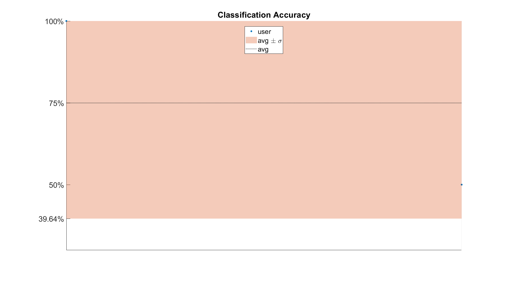
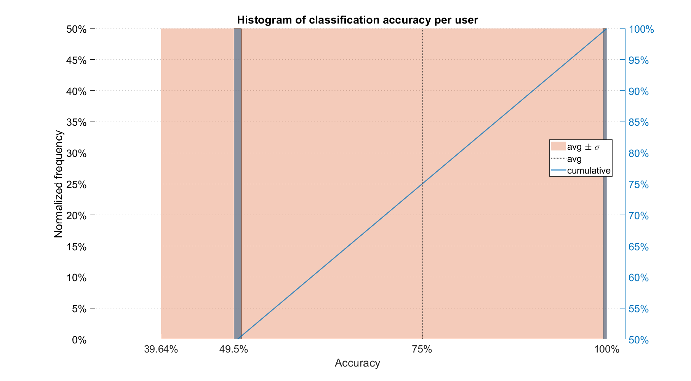
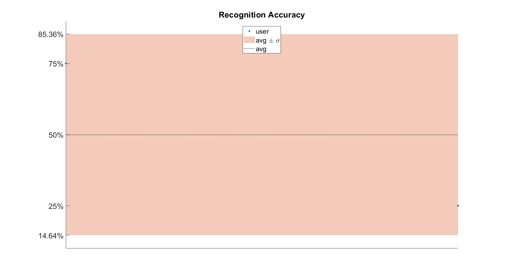
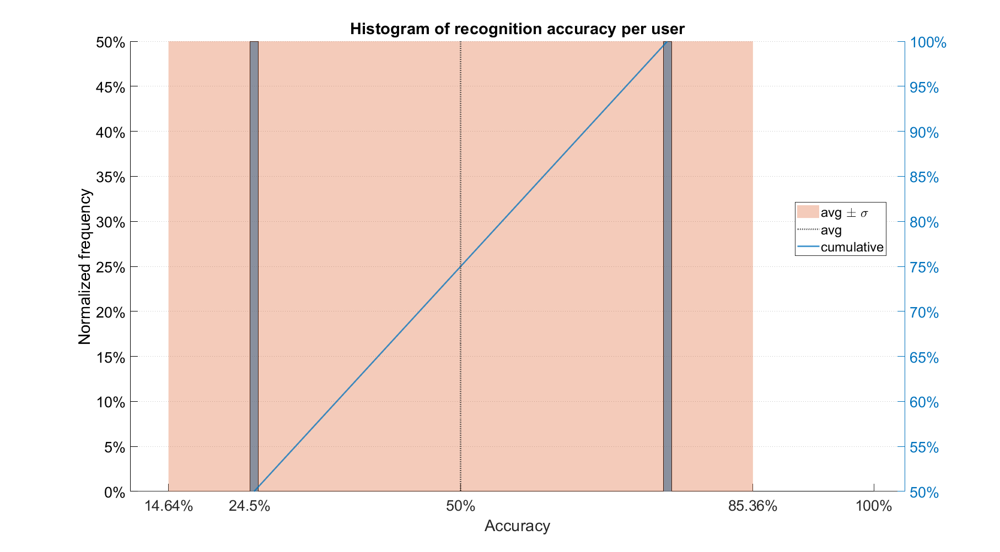
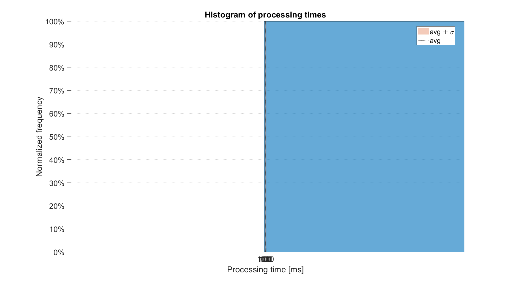
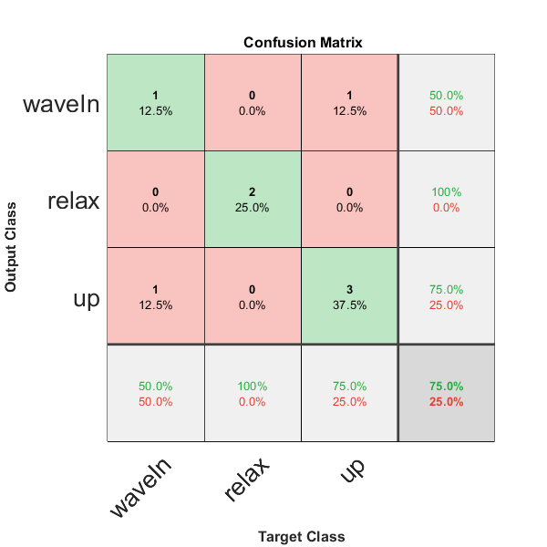

Contents
clear all
close all
clc
options
userGroup = 'training';
repGroup = 'testing';
options.save = false;
evalOpts.defaultGesture = 'relax';
Creating synthetic samples
repsU1.class = num2cell(categorical(["waveIn"; "relax"; "up"; "up"]));
repsU1.vectorOfLabels = ...
{categorical({'relax', 'relax', 'waveIn', 'waveIn', 'waveIn'})
categorical({'relax', 'relax', 'relax', 'relax', 'relax'})
categorical({'relax', 'relax', 'up', 'up', 'relax'})
categorical({'relax', 'relax', 'waveIn', 'up', 'up'})};
repsU1.vectorOfTimePoints = ...
{[50 200 400 600 800]
[50 200 400 600 800]
[50 200 400 600 800]
[50 200 400 600 800]
};
repsU1.vectorOfProcessingTime = ...
{[0.1 0.1 0.1 0.1 0.1]
[0.1 0.1 0.1 0.1 0.1]
[0.1 0.1 0.1 0.1 0.1]
[0.1 0.1 0.1 0.1 0.1]
};
responses.(repGroup).user_1 = repsU1;
gt = false(1, 1000);
gt(400:600) = true;
repInfo1 = {[], categorical({'waveIn'}), [], gt};
repInfo2 = {[], categorical({'relax'}), [], gt};
repInfo3 = {[], categorical({'up', }), [], gt};
repInfo4 = {[], categorical({'up', }), [], gt};
repsInfo.(userGroup).user_1.repInfo.(repGroup) = [repInfo1
repInfo2
repInfo3
repInfo4];
repsU2.class = num2cell(categorical(["up"; "relax"; "up"; "waveIn"]));
repsU2.vectorOfLabels = ...
{categorical({'relax', 'relax', 'waveIn', 'up', 'up'})
categorical({'relax', 'relax', 'relax', 'relax', 'relax'})
categorical({'up', 'relax', 'up', 'up', 'relax'})
categorical({'relax', 'relax', 'waveIn', 'up', 'relax'})};
repsU2.vectorOfTimePoints = ...
{[50 200 400 600 800]
[50 200 400 600 800]
[50 200 400 600 800]
[50 200 400 600 800]
};
repsU2.vectorOfProcessingTime = ...
{[0.1 0.1 0.1 0.1 0.1]
[0.1 0.1 0.1 0.1 0.1]
[0.1 0.1 0.1 0.1 0.1]
[0.1 0.1 0.1 0.1 0.1]
};
gt = false(1, 1000);
gt(500:700) = true;
repInfo1 = {[], categorical({'waveIn'}), [], gt};
repInfo2 = {[], categorical({'relax'}), [], gt};
repInfo3 = {[], categorical({'up', }), [], gt};
repInfo4 = {[], categorical({'up', }), [], gt};
responses.(repGroup).user_2 = repsU2;
repsInfo.(userGroup).user_2.repInfo.(repGroup) = [repInfo1
repInfo2
repInfo3
repInfo4];
Running the evalRecognition Loop
[evaluation, confusion, tiemps] = evalRecognition_loop(responses, ...
repsInfo, userGroup, repGroup, evalOpts);
10-Jun-2022 17:26:54: Analyzing user_1
10-Jun-2022 17:26:54: Analyzing user_2
Analyse results
[sumTable, class, classStd, recog, recogStd, time, timeStd, ...
targets, outputs] = ...
analyseResults(evaluation, confusion, tiemps, options);
beep
Laboratorio de Inteligencia y Visión Artificial
Escuela Politécnica Nacional
Quito-Ecuador
by Jonathan A. Zea
===========================================
MAIN RESULTS
===========================================
10-Jun-2022 17:26:55
classification Accuracy: 75.00% ± 35.36% recognition Accuracy: 50.00% ± 35.36%
time: 0.1 ± 4.21637e-17 [s]
charts Results
plotSummaryResults(sumTable, class, classStd, recog, recogStd ...
,tiemps, targets, outputs, options)
     
output
results.class = class;
results.class_std = classStd;
results.recog = recog;
results.recog_std = recogStd;
results.time = time;
results.time_std = timeStd;
results
results =
struct with fields:
class: 75
class_std: 35.3553
recog: 50
recog_std: 35.3553
time: 0.1000
time_std: 4.2164e-17